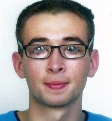
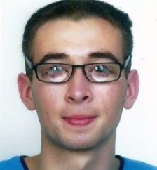

|
13 rue de la Patouillère 44 230 Saint Sébastien sur Loire |

|
06-79-08-92-22 |

|
corentin.may@orange.fr |
| RQTH |

|
|
13 rue de la Patouillère 44 230 Saint Sébastien sur Loire |
|
|
06-79-08-92-22 |
|
|
corentin.may@orange.fr |
| RQTH |
 Formations
Formations- Mars – juin 2016 : projet application web pour passer d’un code C au code assembleur (nodeJS)
- Mars 2016 : projet implémentation du jeu d’échec martien en Java
- Octobre – décembre 2015 : Projet recherche documentaire sur la qualité d’expérience d’une séquence http://projetqoe.cf/
| • Architecture système | • Bases de données | • Gestion de projet |
| • Architecture des réseaux | • Conception et programmation objet | • … |
Lycée Polyvalent Les Bourdonnières - Nantes
Maîtrise de la suite Office (Word, Excel, Publisher…).
Connaissances en C, assembleur (IA32), Java, Python, SQL, HTML et CSS.
Maitrise des bases de InDesign, Illustrator, Photoshop…
Anglais : Maitrise des bases
Espagnol : Maitrise des bases
Stage découverte du monde du travail et de l’informatique dans une société d’assistance, dépannage et formation en informatique et nouvelle technologie pour particulier et professionnel.
Pratique pendant 8 ans (dont 4 ans en compétitions) en Optimist puis dériveur (Laser).
Cinéma français, commédie, film dramatique...